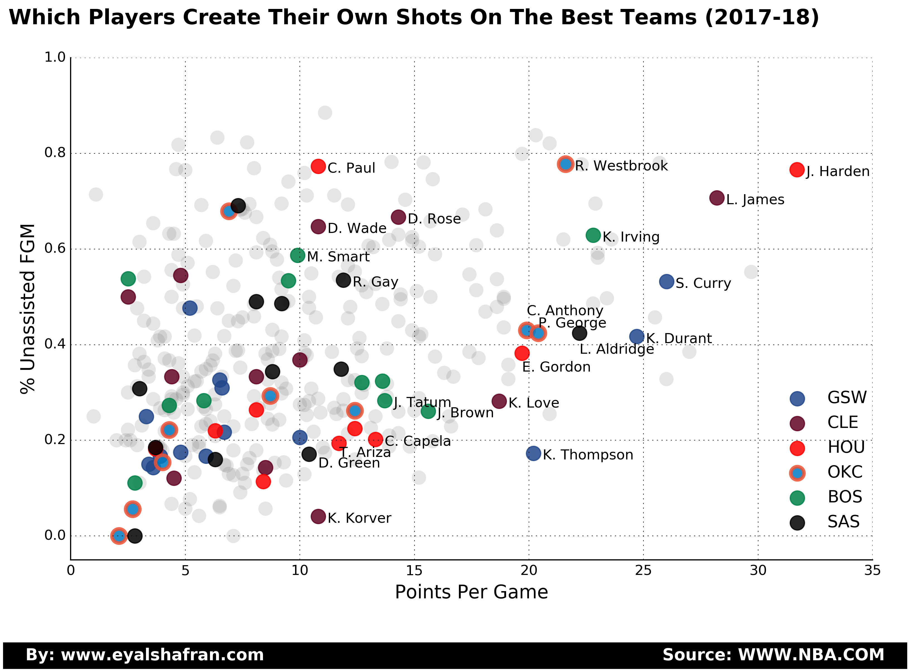

All figures are updated for the 2017-18 season as of the posts date.

Top right - create their own shots and scores a lot.
Bottom right - High scoring mostly from assisted FGM.
Upper left - Not much scoring but create their own shots.
Bottom left - Not much scoring and also need others to create for them.
This figure is the same basic idea as the first but with effective field goal % displayed in color.
Can't see much correlation between the EFG and the % of unassisted shots. Let's plot this more closely to see if there is any correlation:
Note that for the next two figures the % unassisted FGM is now the x-axis.
Can't see any noticeable correlation.
How about teams?
Here it seems like there is a trend. Assists count for something.
Let me know what you think
Thank you Tomer Tal for usefull comments.
I'll be happy to share my code upon request.
Comments
comments powered by Disqus